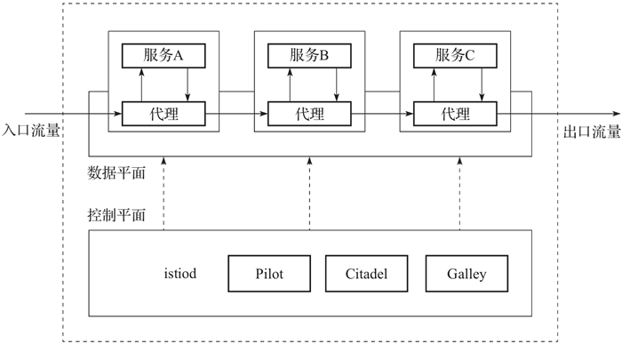

首页 > 编程笔记
什么是云原生（非常详细）
云原生计算加速了应用与基础设施资源之间的解耦，通过定义开放标准，向下封装资源，将复杂性下沉到基础设施层；向上支撑应用，让开发者更关注业务价值。此外，云原生计算提供统一的技术栈，动态、混合、分布式的云原生环境将成为新常态。
本节我们将一起探讨什么是云原生，它的关键技术包括哪些。
可见，云原生并不是简单地使用云平台运行现有的应用程序，它是一种能充分利用云计算优势对应用程序进行设计、实现、部署、交付和操作的应用架构方法。
云原生技术一直在不断地变化和发展，关于云原生的定义也在不断地迭代和更新，不同的社区组织或公司对云原生也有自己的理解和定义。
Pivotal 公司是云原生应用架构的先驱者和探路者，云原生的定义最早也是由 Pivotal 公司的 Matt Stine 于 2013 年提出的。Matt Stine 在 2015 年出版的 Migrating to Cloud-Native Application Architectures 一书中提出，云原生应用架构应该具备以下几个主要特征，如下表所示。
2017 年 Matt Stine 对云原生的定义做了一些修改，认为云原生应用架构应该具备 6 个主要特征：模块化、可观测性、可部署性、可测试性、可处理性和可替换性。截至本文发布时，Pivotal 公司对云原生的最新定义为 4 个要点：DevOps、持续交付、微服务、容器。
除了对云原生技术发展做出巨大贡献的 Pivotal 公司，另一个不得不提的云原生技术推广者就是云原生计算基金会（Cloud Native Computing Foundation，CNCF）。CNCF 是由开源基础设施界的翘楚 Google 等多家公司共同发起的基金会组织，致力于维护一个厂商中立的云原生生态系统，目前已经是云原生技术最大的推动者。
云原生计算基金会对云原生的定义：云原生技术有利于各组织在公有云、私有云和混合云等新型动态环境中构建和运行可弹性扩展的应用。云原生的代表技术包括容器、服务网格、微服务、不可变基础设施和声明式 API。这些技术能够构建容错性好、易于管理和便于观察的松耦合系统。结合可靠的自动化手段，云原生技术使工程师能够轻松地对系统做出频繁和可预测的重大变更。
容器的基本思想就是将需要执行的所有软件打包到一个可执行程序包中，比如将一个 Java 虚拟机、Tomcat 服务器以及应用程序本身打包进一个容器镜像。用户可以在基础设施环境中使用这个容器镜像启动容器并运行应用程序，还可以将容器化运行的应用程序与基础设施环境隔离。
容器具有高度的可移植性，用户可以轻松地在开发测试、预发布或生产环境中运行相同的容器。如果应用程序被设计为支持水平扩缩容，就可以根据当前业务的负载情况启动或停止容器的多个实例。
Docker 项目是当前最受欢迎的容器实现，以至于很多人通常都将 Docker 和容器互换使用，但请记住，Docker 项目只是容器技术的一种实现，将来有可能会被替换。
因为具备轻量级的隔离属性，容器技术已然成为云原生时代应用程序开发、部署和运维的标准基础设置。使用容器技术开发和部署应用程序的好处如下：
为了让应用程序的各个微服务之间协同工作，通常需要互相调用 REST 等形式的标准接口进行通信和数据交换，这是一种松耦合的交互形式。
微服务基于分布式计算架构，其主要特点可以概括为如下两点：
基于分布式计算、可弹性扩展和组件自治的微服务，与云原生技术相辅相成，为应用程序的设计、开发和部署提供了极大便利：
微服务具备灵活部署、可扩展、技术异构等优点，但需要一定的技术成本，而且数量众多的微服务也增加了运维的复杂度，是否采用微服务架构需要根据应用程序的特点、企业的组织架构和团队能力等多个方面来综合评估。
服务网格（Service Mesh）可以作为服务间通信的基础设施层，解决上述问题。
服务网格是轻量级的网络代理，能解耦应用程序的重试/超时、监控、追踪和服务发现，并且能做到应用程序无感知。服务网格可以使服务与服务之间的通信更加流畅、可靠、安全，它的实现通常是提供一个代理实例，和对应的服务一起部署在环境中，这种模式我们称为 Sidecar 模式，Sidecar 模式可处理服务之间通信的任何功能，比如负载均衡、服务发现等。
服务网格的基础设施层主要分为两个部分，控制平面与数据平面，如图 1 所示。控制平面主要负责协调 Sidecar 的行为，提供 API 便于运维人员操控和测量整个网络。数据平面主要负责截获不同服务之间的调用请求并对其进行处理。
与微服务架构相比，服务网格具有 3 个方面的优势：
开发人员通常以持续集成和持续交付（CI/CD）的方式，快速交付高质量的应用程序。
持续集成是指开发人员频繁地将开发分支代码合并到主干分支，这些开发分支在真正合并到主干分支之前，都需要持续编译、构建和测试，以提前检查和验证其存在的缺陷。持续集成的本质是确保开发人员新增的代码与主干分支正确集成。
持续交付是指软件产品可以稳定、持续地保持随时可发布的状态，它的目标是促进产品迭代更频繁，持续为用户创造价值。
与持续集成关注代码构建和集成相比，持续交付关注的是可交付的产物。持续集成只是对新代码与原有代码的集成做了检查和测试，在可交付的产物真正交付至生产环境之前，我们一般还需要将其部署至测试环境和预发布环境，进行充分的集成测试和验证，最后才会交付至生产环境，保证新增代码在生产环境中稳定可用。
使用持续集成和持续交付的优势如下：
云原生应用通常包含多个子功能组件，DevOps 可以大大简化云原生应用从开发到交付的过程，实现真正的价值交付。
与可变基础设施相对应的是不可变基础设施，是指一个基础设施环境被创建以后不接受任何方式的更新和修改。这个基础设施也可以作为模板来扩展更多的基础设施。如果需要对基础设施做更新迭代，那么应该先修改这些基础设施的公共配置部分，构建新的基础设施，将旧的替换下线。简而言之，不可变基础设施架构是通过整体替换而不是部分修改来创建和变更的。
不可变基础设施的优势在于能保持多套基础设施的一致性和可靠性，而且基础设施的创建和部署过程也是可预测的。在云原生结构中，借助 Kubernetes 和容器技术，云原生不可变基础设施提供了一个全新的方式来实现应用交付。
云原生不可变基础设施具有以下优势：
与声明式设计相对应的是过程式设计。在过程式设计中，我们需要描述为了让事物达到目标状态的一系列操作，这一系列的操作只有都被正确执行，才会达到我们期望的最终状态。
在声明式 API 中，我们需要向系统声明我们期望的状态，系统会不断地向该状态驱动。在 Kubernetes 中，声明式 API 指的就是集群期望的运行状态，如果有任何与期望状态不一致的情况，Kubernetes 就会根据声明做出对应的合适的操作。
使用声明式 API 的好处可以总结为以下两点：
本节我们将一起探讨什么是云原生，它的关键技术包括哪些。
云原生的定义
云原生（Cloud Native）是一个组合词，“云”表示应用程序运行于分布式云环境中，“原生”表示应用程序在设计之初就充分考虑到了云平台的弹性和分布式特性，就是为云设计的。可见，云原生并不是简单地使用云平台运行现有的应用程序，它是一种能充分利用云计算优势对应用程序进行设计、实现、部署、交付和操作的应用架构方法。
云原生技术一直在不断地变化和发展，关于云原生的定义也在不断地迭代和更新，不同的社区组织或公司对云原生也有自己的理解和定义。
Pivotal 公司是云原生应用架构的先驱者和探路者，云原生的定义最早也是由 Pivotal 公司的 Matt Stine 于 2013 年提出的。Matt Stine 在 2015 年出版的 Migrating to Cloud-Native Application Architectures 一书中提出，云原生应用架构应该具备以下几个主要特征，如下表所示。
| 因 素 | 描 述 |
|---|---|
| 基准代码 | 一份基准代码，多份部署 |
| 依赖 | 显示声明依赖关系 |
| 配置 | 应用配置存储在环境中，与代码分离 |
| 后端服务 | 将通过网络调用的其他后端服务当作应用的附加资源 |
| 构建、发布、运行 | 严格分离构建、发布和运行 |
| 进程 | 以一个或多个无状态进程运行应用 |
| 端口绑定 | 通过端口绑定提供服务 |
| 并发 | 通过进程模型进行扩展 |
| 易处理 | 快速启动和优雅终止的进程可以最大化应用的健壮性 |
| 开发环境和线上环境一致性 | 尽可能保证开发环境、预发环境和线上环境的一致性 |
| 日志 | 把日志当作事件流的汇总 |
| 管理进程 | 把后台管理任务当作一次性进程运行 |
2017 年 Matt Stine 对云原生的定义做了一些修改，认为云原生应用架构应该具备 6 个主要特征：模块化、可观测性、可部署性、可测试性、可处理性和可替换性。截至本文发布时，Pivotal 公司对云原生的最新定义为 4 个要点：DevOps、持续交付、微服务、容器。
除了对云原生技术发展做出巨大贡献的 Pivotal 公司，另一个不得不提的云原生技术推广者就是云原生计算基金会（Cloud Native Computing Foundation，CNCF）。CNCF 是由开源基础设施界的翘楚 Google 等多家公司共同发起的基金会组织，致力于维护一个厂商中立的云原生生态系统，目前已经是云原生技术最大的推动者。
云原生计算基金会对云原生的定义：云原生技术有利于各组织在公有云、私有云和混合云等新型动态环境中构建和运行可弹性扩展的应用。云原生的代表技术包括容器、服务网格、微服务、不可变基础设施和声明式 API。这些技术能够构建容错性好、易于管理和便于观察的松耦合系统。结合可靠的自动化手段，云原生技术使工程师能够轻松地对系统做出频繁和可预测的重大变更。
云原生关键技术
1) 容器
容器技术是一种相对于虚拟机来说更加轻量的虚拟化技术，能为我们提供一种可移植、可重用的方式来打包、分发和运行应用程序。容器提供的方式是标准化的，可以将不同应用程序的不同组件组装在一起，又可以将它们彼此隔离。容器的基本思想就是将需要执行的所有软件打包到一个可执行程序包中，比如将一个 Java 虚拟机、Tomcat 服务器以及应用程序本身打包进一个容器镜像。用户可以在基础设施环境中使用这个容器镜像启动容器并运行应用程序，还可以将容器化运行的应用程序与基础设施环境隔离。
容器具有高度的可移植性，用户可以轻松地在开发测试、预发布或生产环境中运行相同的容器。如果应用程序被设计为支持水平扩缩容，就可以根据当前业务的负载情况启动或停止容器的多个实例。
Docker 项目是当前最受欢迎的容器实现，以至于很多人通常都将 Docker 和容器互换使用，但请记住，Docker 项目只是容器技术的一种实现，将来有可能会被替换。
因为具备轻量级的隔离属性，容器技术已然成为云原生时代应用程序开发、部署和运维的标准基础设置。使用容器技术开发和部署应用程序的好处如下：
- 应用程序的创建和部署过程更加敏捷：与虚拟机镜像相比，使用应用程序的容器镜像更简便和高效。
- 可持续开发、集成和部署：借助容器镜像的不可变性，可以快速更新或回滚容器镜像版本，进行可靠且频繁的容器镜像构建和部署。
- 提供环境一致性：标准化的容器镜像可以保证跨开发、测试和生产环境的一致性，不必为不同环境的细微差别而苦恼。
- 提供应用程序的可移植性：标准化的容器镜像可以保证应用程序运行于Ubuntu、CentOS等各种操作系统或云环境下。
- 为应用程序的松耦合架构提供基础设置：应用程序可以被分解成更小的独立组件，可以很方便地进行组合和分发。
- 资源利用率更高。
- 实现了资源隔离：容器应用程序和主机之间的隔离、容器应用程序之间的隔离可以为运行应用程序提供一定的安全保证。
- 容器技术大大简化了云原生应用程序的分发和部署，可以说容器技术是云原生应用发展的基石。
2) 微服务
微服务是一种软件架构方式，我们使用微服务架构可以将一个大型应用程序按照功能模块拆分成多个独立自治的微服务，每个微服务仅实现一种功能，具有明确的边界。为了让应用程序的各个微服务之间协同工作，通常需要互相调用 REST 等形式的标准接口进行通信和数据交换，这是一种松耦合的交互形式。
微服务基于分布式计算架构，其主要特点可以概括为如下两点：
- 单一职责：微服务架构中的每一个服务，都应是符合高内聚、低耦合以及单一职责原则的业务逻辑单元，不同的微服务通过 REST 等形式的标准接口互相调用，进行灵活的通信和组合，从而构建出庞大的系统。
- 独立自治性：每个微服务都应该是一个独立的组件，它可以被独立部署、测试、升级和发布，应用程序中的某个或某几个微服务被替换时，其他的微服务都不应该被影响。
基于分布式计算、可弹性扩展和组件自治的微服务，与云原生技术相辅相成，为应用程序的设计、开发和部署提供了极大便利：
- 简化复杂应用：微服务的单一职责原则要求一个微服务只负责一项明确的业务，相对于构建一个可以完成所有任务的大型应用程序，实现和理解只提供一个功能的小型应用程序要容易得多。每个微服务单独开发，可以加快开发速度，使服务更容易适应变化和新的需求。
- 简化应用部署：在单体的大型应用程序中，即使只修改某个模块的一行代码，也需要对整个系统进行重新构建、部署、测试和交付。而微服务则可以单独对某一个指定的组件进行构建、部署、测试和交付。
- 灵活组合：在微服务架构中，可以重用一些已有的微服务组合新的应用程序，降低应用开发成本。
- 可扩展性：根据应用程序中不同的微服务负载情况，可以为负载高的微服务横向扩展多个副本。
- 技术异构性：通常在一个大型应用程序中，不同的模块具有不同的功能特点，可能需要不同的团队使用不同的技术栈进行开发。我们可以使用任意新技术对某个微服务进行技术架构升级，只要对外提供的接口保持不变，其他微服务就不会受到影响。
- 高可靠性、高容错性：微服务独立部署和自治，当某个微服务出现故障时，其他微服务不受影响。
微服务具备灵活部署、可扩展、技术异构等优点，但需要一定的技术成本，而且数量众多的微服务也增加了运维的复杂度，是否采用微服务架构需要根据应用程序的特点、企业的组织架构和团队能力等多个方面来综合评估。
3) 服务网格
随着微服务逐渐增多，应用程序最终可能会变为成百上千个互相调用的服务组成的大型应用程序，服务与服务之间通过内部或者外部网络进行通信。如何管理这些服务的连接关系以及保持通信通道无故障、安全、高可用和健壮，就成了一个非常大的挑战。服务网格（Service Mesh）可以作为服务间通信的基础设施层，解决上述问题。
服务网格是轻量级的网络代理，能解耦应用程序的重试/超时、监控、追踪和服务发现，并且能做到应用程序无感知。服务网格可以使服务与服务之间的通信更加流畅、可靠、安全，它的实现通常是提供一个代理实例，和对应的服务一起部署在环境中，这种模式我们称为 Sidecar 模式，Sidecar 模式可处理服务之间通信的任何功能，比如负载均衡、服务发现等。
服务网格的基础设施层主要分为两个部分，控制平面与数据平面，如图 1 所示。控制平面主要负责协调 Sidecar 的行为，提供 API 便于运维人员操控和测量整个网络。数据平面主要负责截获不同服务之间的调用请求并对其进行处理。

图 1 服务网格典型架构
图 1 服务网格典型架构
与微服务架构相比，服务网格具有 3 个方面的优势：
- 可观测性：所有服务间通信都需要经过服务网格，所以在此处可以捕获所有调用相关的指标数据，如来源、目的地、协议、URL、状态码等，并通过 API 供运维人员观测。
- 流量控制：服务网格可以为服务提供智能路由、超时重试、熔断、故障注入和流量镜像等控制能力。
- 安全性：服务网格提供认证服务、加密服务间通信以及强制执行安全策略的能力。
4) DevOps
DevOps（Development & Operations，开发和运维）是软件开发人员和 IT 人员之间的合作过程，是一种工作环境、文化和实践的集合，目标是高效地自动执行软件交付和基础架构更改流程。开发和运维人员通过持续不断的沟通和协作，可以以一种标准化和自动化的方式快速、频繁且可靠地交付应用。开发人员通常以持续集成和持续交付（CI/CD）的方式，快速交付高质量的应用程序。
持续集成是指开发人员频繁地将开发分支代码合并到主干分支，这些开发分支在真正合并到主干分支之前，都需要持续编译、构建和测试，以提前检查和验证其存在的缺陷。持续集成的本质是确保开发人员新增的代码与主干分支正确集成。
持续交付是指软件产品可以稳定、持续地保持随时可发布的状态，它的目标是促进产品迭代更频繁，持续为用户创造价值。
与持续集成关注代码构建和集成相比，持续交付关注的是可交付的产物。持续集成只是对新代码与原有代码的集成做了检查和测试，在可交付的产物真正交付至生产环境之前，我们一般还需要将其部署至测试环境和预发布环境，进行充分的集成测试和验证，最后才会交付至生产环境，保证新增代码在生产环境中稳定可用。
使用持续集成和持续交付的优势如下：
- 避免重复性劳动，减少人工操作的错误：自动化部署可以将开发运维人员从应用程序集成、测试和部署等重复性劳动环节中解放出来，而且人工操作容易犯错，机器犯错的概率则非常小。
- 提前发现问题和缺陷：持续集成和持续交付能让开发和运维人员更早地获取应用程序的变更情况，更早地进入测试和验证阶段，也就能更早地发现和解决问题。
- 更频繁的迭代：持续集成和持续交付缩短了从开发、集成、测试、部署到交付各个环节的时间，中间有任何问题都可以快速“回炉”改造和更新，整个过程敏捷且可持续，大大提高了应用程序的迭代频率和效率。
- 更高的产品质量：持续集成可以结合代码预览、代码质量检查等功能，对不规范的代码进行标识和通知；持续交付可以在产品上线前充分验证应用可能存在的缺陷，最终提供给用户一款高质量的产品。
云原生应用通常包含多个子功能组件，DevOps 可以大大简化云原生应用从开发到交付的过程，实现真正的价值交付。
5) 不可变基础设施
在应用开发测试到上线的过程中，应用通常需要被频繁部署到开发环境、测试环境和生产环境中，在传统的可变架构时代，通常需要系统管理员保证所有环境的一致性，而随着时间的推移，这种靠人工维护的环境一致性很难维持，环境的不一致又会导致应用越来越容易出错。这种由人工维护、经常被更改的环境就是我们常说的“可变基础设施”。与可变基础设施相对应的是不可变基础设施，是指一个基础设施环境被创建以后不接受任何方式的更新和修改。这个基础设施也可以作为模板来扩展更多的基础设施。如果需要对基础设施做更新迭代，那么应该先修改这些基础设施的公共配置部分，构建新的基础设施，将旧的替换下线。简而言之，不可变基础设施架构是通过整体替换而不是部分修改来创建和变更的。
不可变基础设施的优势在于能保持多套基础设施的一致性和可靠性，而且基础设施的创建和部署过程也是可预测的。在云原生结构中，借助 Kubernetes 和容器技术，云原生不可变基础设施提供了一个全新的方式来实现应用交付。
云原生不可变基础设施具有以下优势：
- 能提升应用交付效率：基于不可变基础设施的应用交付，可以由代码或编排模板来设定，这样就可以使用 Git 等控制工具来管理应用和维护环境。基础设施环境一致性能保证应用在开发测试环境、预发布环境和线上生产环境的运行表现一致，不会频繁出现开发测试时运行正常、发布后出现故障的情况。
- 能快速、可靠地水平扩展：基于不可变基础设施的配置模板，我们可以快速创建与已有基础设施环境一致的新基础设施环境。
- 能保证基础设施的快速更新和回滚：基于同一套基础设施模板，若某一环境被修改，则可以快速进行回滚和恢复，若需对所有环境进行更新升级，则只需更新基础设施模板并创建新环境，将旧环境一一替换。
6) 声明式API
声明式设计是一种软件设计理念：我们负责描述一个事物想要达到的目标状态并将其提交给工具，由工具内部去处理如何实现目标状态。与声明式设计相对应的是过程式设计。在过程式设计中，我们需要描述为了让事物达到目标状态的一系列操作，这一系列的操作只有都被正确执行，才会达到我们期望的最终状态。
在声明式 API 中，我们需要向系统声明我们期望的状态，系统会不断地向该状态驱动。在 Kubernetes 中，声明式 API 指的就是集群期望的运行状态，如果有任何与期望状态不一致的情况，Kubernetes 就会根据声明做出对应的合适的操作。
使用声明式 API 的好处可以总结为以下两点：
- 声明式 API 能够使系统更加健壮，当系统中的组件出现故障时，组件只需要查看API服务器中存储的声明状态，就可以确定接下来需要执行的操作。
- 声明式 API 能够减少开发和运维人员的工作量，极大地提升工作效率。
关注公众号「站长严长生」，在手机上阅读所有教程，随时随地都能学习。内含一款搜索神器，免费下载全网书籍和视频。

微信扫码关注公众号